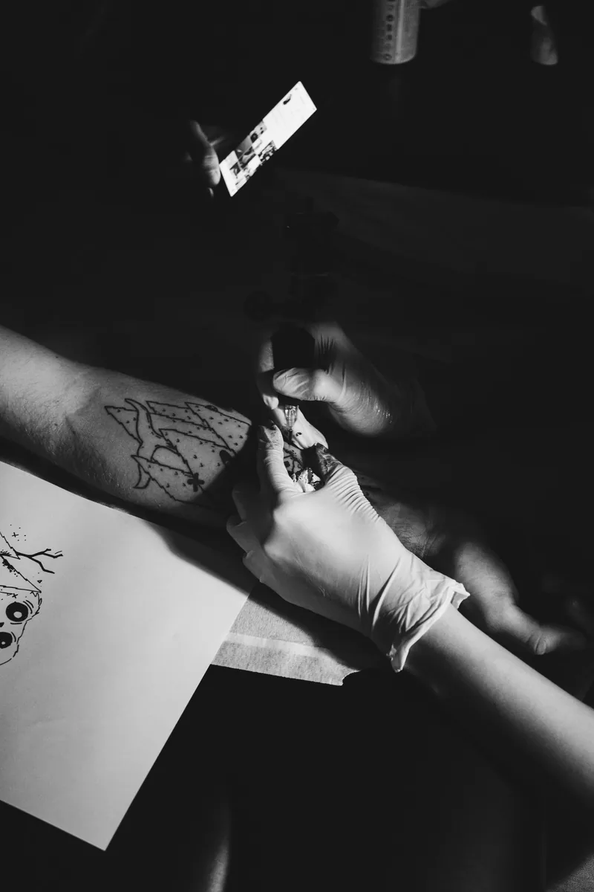
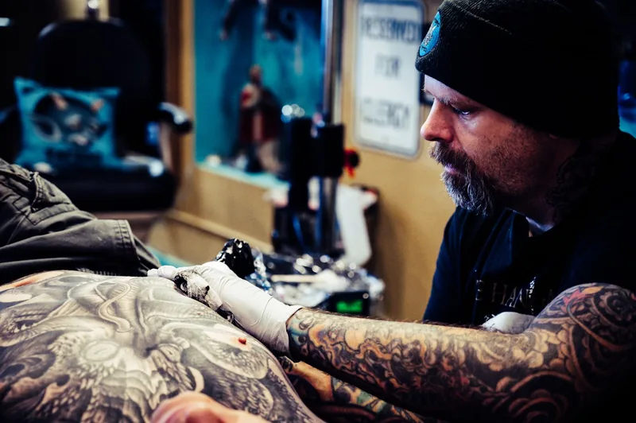
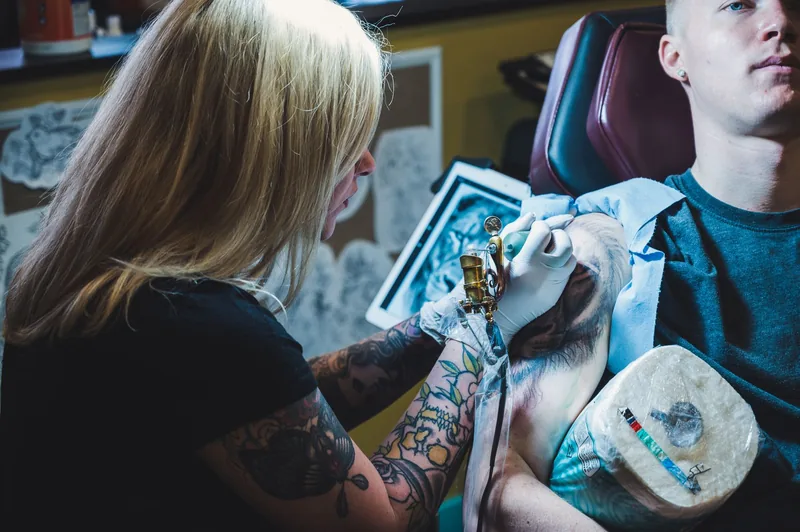
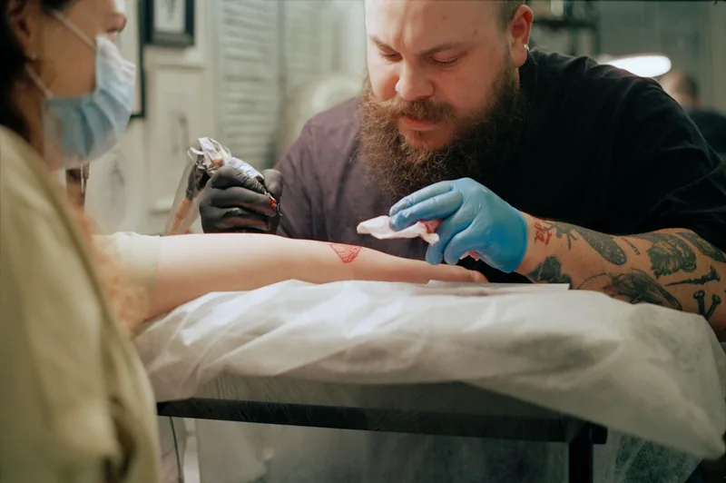
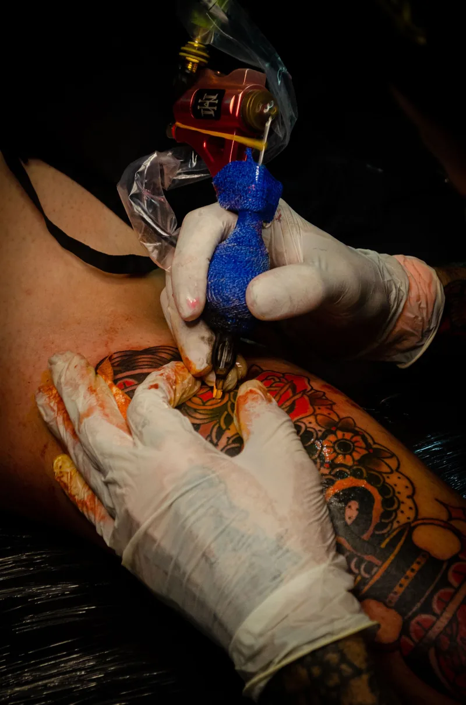
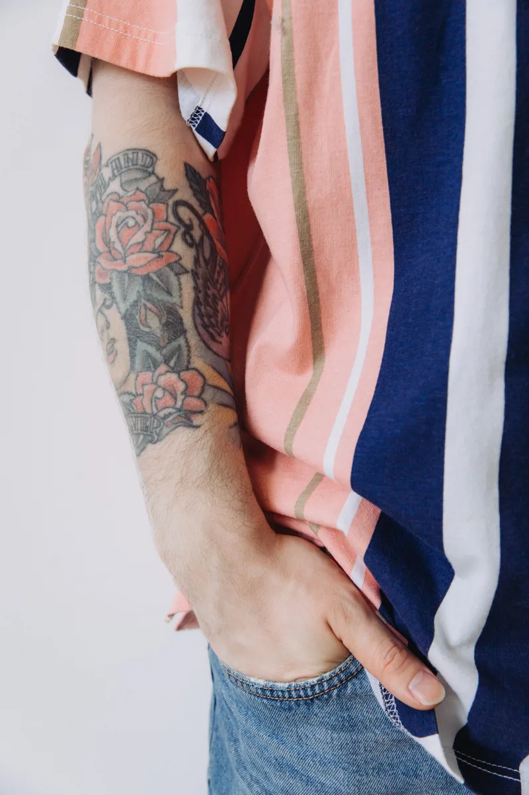
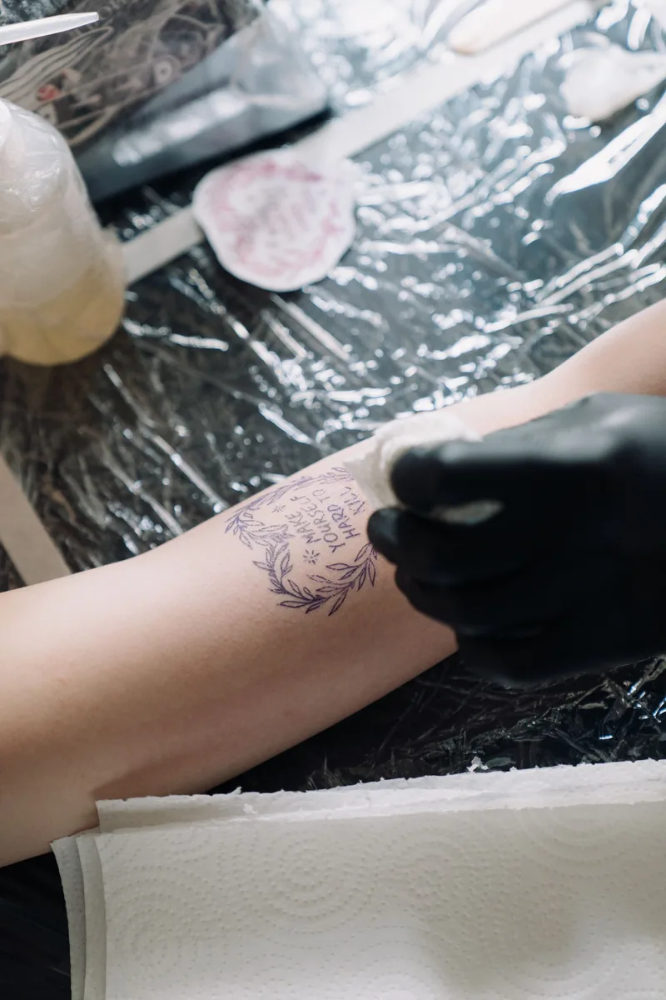
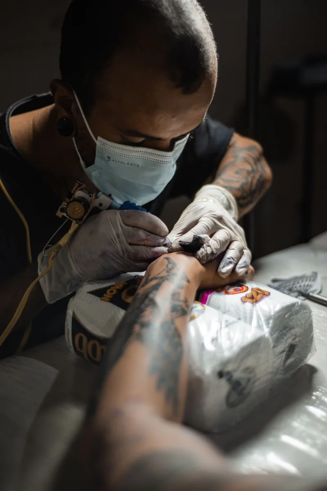
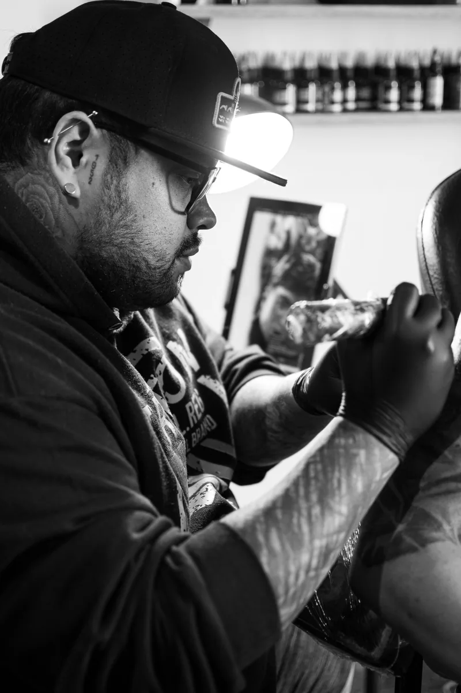
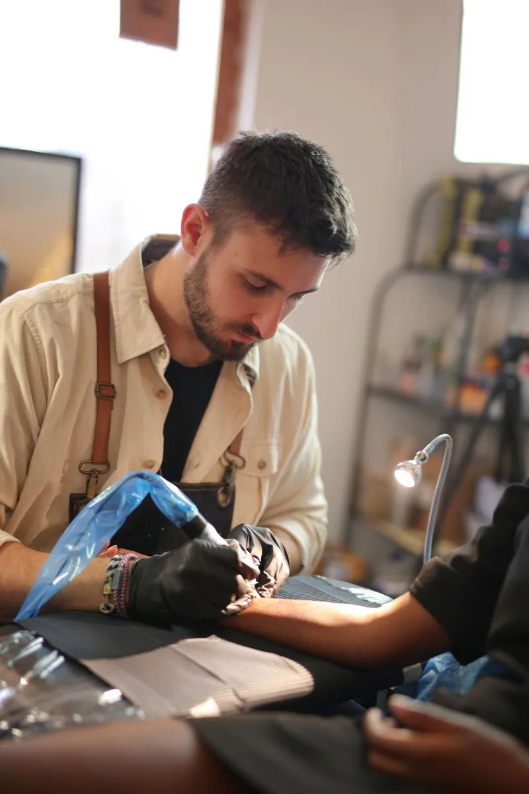

01Blackwork
Bold black ink, graphic shapes and heavy contrast that holds up for years.
01 / Tattoo studio — Swansea
A clinical, one-on-one studio on Oxford Street. No rushing, no distractions — just your idea, refined with an artist, and tattooed to a standard reviewers call beyond what they expected.


02 / The studio
Swansea Tattoo Lab works as a bespoke, one-on-one studio: consultations first, designs refined with you, and a clinical, professional room where the focus stays on the work. Reviewers describe the hygiene as immaculate and the atmosphere as relaxed — a place where first-timers feel looked after, not rushed.
The studio sits on Oxford Street in central Swansea, easy to reach for locals and visitors alike.

03 / Styles & services
Scroll sideways through the styles. Prices on request — quoted after consultation, based on size, placement and detail.

01Bold black ink, graphic shapes and heavy contrast that holds up for years.
Delicate, precise linework — small symbols, script and detailed miniatures.

03Full-colour pieces with saturated, carefully packed colour that stays bright.

04Old ink reworked into something you actually want to show — bring it to a consultation first.

05Your idea, drawn for you — not picked off a wall. Consultations shape the final design.
Reviewers also recommend the studio for piercings — same clinical standard, same calm room.
04 / Process
Talk through your idea, size and placement. Bring references and photo ID — you must be 18 or over.
Your artist refines the design with you until it is right. Nothing is tattooed that you have not approved.
A one-on-one sitting in a clinical room — single-use needles, clean surfaces, no distractions.
Written aftercare guidance to take home, so the work heals clean and holds its detail.
05 / Work
A grid of studio moments — sessions, stencils and finished work. More on the studio's Facebook page.



06 / Reputation
“The hygiene inside the shop is absolutely immaculate” — the line that appears again and again in reviews.
Nervous first-timers say they were talked through everything, made to laugh, and left wanting their next piece.
Reviewers single out the shading and detail — work described as beyond what they expected.
Returning clients say they are remembered by name — the studio treats people as regulars, not appointments.
07 / First-timers
This is a good studio for a first tattoo. Book a consultation, bring photo ID showing you are 18 or older, and a clear idea of placement and size. Your artist will talk through design, pain, healing and aftercare before anything starts — and reviewers say the team is especially good at putting nervous clients at ease.
Walk-in availability varies; booking in advance is recommended for larger pieces.
08 / Questions
Walk-in availability varies — booking in advance is recommended, especially for larger pieces. Call or email to arrange a consultation.
Photo ID showing you are 18 or older, plus reference images and a clear idea of placement and rough size.
Yes — cover-ups are one of the studio's listed services. Bring the existing tattoo to a consultation so the artist can plan the rework.
The studio provides aftercare guidance after your session. In general: keep it clean, moisturise lightly, and avoid sun, pools and picking while it heals.
09 / Visit
10 / Book
Send a note — it opens in your email app addressed to the studio. Consultations come first.